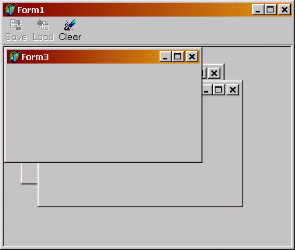

Интерфейсы и TComponent
В базовом классе VCL TComponent имеется полный набор методов, позволяющих реализовать интерфейс IUnknown, хотя сам класс не реализует этого интерфейса. Это позволяет наследникам TComponent реализовывать интерфейсы не заботясь о реализации IUnknown. Однако, методы TComponent._AddRef и TComponent._Release на этапе выполнения программы не реализуют механизма подсчета ссылок, и, соответственно, для классов-наследников TComponent, реализующих интерфейсы не действует автоматическое управление памятью. Это позволяет запрашивать у них интерфейсы не опасаясь, что объект будет удален из памяти при выходе переменной за область видимости. Таким образом, следующий код совершенно корректен и безопасен:
type
IGetData = interface
['{B5266AE0-5E77-11D4-84DD-9153115ABFC3}']
function GetData: String;
end;
TForm1 = class(TForm, IGetData)
private
function GetData: String;
end;
…
var
I: Integer;
GD: IGetData;
S: String;
begin
S := '';
for I := 0 to Pred(Screen.FormCount) do begin
if Screen.Forms[I].GetInterface(IGetData, GD) then
S := S + GD.GetData + #13;
end;
ShowMessage(S);
end;
Этот код проверяет наличие у всех форм в приложении реализации интерфейса IGetData и, если форма реализует этот интерфейс – вызывает его метод.
Использование интерфейсов внутри программы.
Рассмотренное выше поведение TComponent позволяет строить просто и не теряя строгой типизации связывать компоненты приложения и единообразно вызывать их методы не требуя, чтобы компоненты были унаследованы от общего предка. Достаточно лишь реализовать в компоненте интерфейс, а в вызывающей программе – проверить его наличие.
Рассмотрим, в качестве примера, MDI приложение, имеющее много различных форм и единую панель инструментов. Предположим, что на этой панели инструментов имеются команды «Сохранить», «Загрузить» и «Очистить», однако, каждое из окон реагирует на эти команды по-разному.
Создадим модуль с объявлениями интерфейсов
unit ToolbarInterface;
interface
type
TCommandType = (ctSave, ctLoad, ctClear);
TCommandTypes = set of TCommandType;
TSaveType = (stSave, stSaveAS);
IToolBarCommands = interface
['{B5266AE1-5E77-11D4-84DD-9153115ABFC3}']
function SupportedCommands: TCommandTypes;
function Save(AType: TSaveType): Boolean;
procedure Load;
procedure Clear;
end;
implementation
end.
Интерфейс IToolBarCommands описывает набор методов, которые должны реализовать поддерживающие работу с панелью кнопок формы. Метод SupportedCommands возвращает список поддерживаемых формой команд
Создадим три дочерние формы Form2, Form3 и Form4, установим им свойство FormStyle = fsMDIChild.
Form2 умеет выполнять все три команды
type
TForm2 = class(TForm, IToolBarCommands)
private
function SupportedCommands: TCommandTypes;
function Save(AType: TSaveType): Boolean;
procedure Load;
procedure Clear;
end;
{ TForm2 }
procedure TForm2.Clear;
begin
ShowMessage('TForm2.Clear');
end;
procedure TForm2.Load;
begin
ShowMessage('TForm2.Load');
end;
function TForm2.Save(AType: TSaveType): Boolean;
begin
ShowMessage('TForm2.Save');
Result := TRUE;
end;
function TForm2.SupportedCommands: TCommandTypes;
begin
Result := [ctSave, ctLoad, ctClear]
end;
Form3 умеет выполнять только команду Clear
type
TForm3 = class(TForm, IToolBarCommands)
private
function SupportedCommands: TCommandTypes;
function Save(AType: TSaveType): Boolean;
procedure Load;
procedure Clear;
end;
{ TForm3 }
procedure TForm3.Clear;
begin
ShowMessage('TForm3.Clear');
end;
procedure TForm3.Load;
begin
// Метод ничего не делает, но должен присутствовать
// для корректной реализации интерфейса
end;
function TForm3.Save(AType: TSaveType): Boolean;
begin
end;
function TForm3.SupportedCommands: TCommandTypes;
begin
Result := [ctClear]
end;
И, наконец, Form4 вообще не реализует интерфейса IToolBarCommands и не умеет откликаться ни на одну команду
На главной форме приложения поместим ActionList и создадим три компонента TAction. Также разместим на ней TToolBar и назначим её кнопкам соответствующие TAction.
type
TForm1 = class(TForm)
ToolBar1: TToolBar;
ImageList1: TImageList;
ActionList1: TActionList;
acLoad: TAction;
acSave: TAction;
acClear: TAction;
tbSave: TToolButton;
tbLoad: TToolButton;
tbClear: TToolButton;
procedure acLoadExecute(Sender: TObject);
procedure ActionList1Update(Action: TBasicAction;
var Handled: Boolean);
procedure acSaveExecute(Sender: TObject);
procedure acClearExecute(Sender: TObject);
end;
Наиболее интересен метод ActionList1Update, в котором проверяются поддерживаемые активной формой команды и настраивается интерфейс главной формы. Если нет активной дочерней формы, либо она не поддерживает интерфейс IToolBarCommands, все команды запрещаются, в противном случае – разрешаются только поддерживаемые формой команды.
procedure TForm1.ActionList1Update(Action: TBasicAction;
var Handled: Boolean);
var
Supported: TCommandTypes;
TC: IToolBarCommands;
begin
if Assigned(ActiveMDIChild)
and ActiveMDIChild.GetInterface(IToolBarCommands, TC) then
Supported := TC.SupportedCommands
else
Supported := [];
acSave.Enabled := ctSave in Supported;
acLoad.Enabled := ctLoad in Supported;
acClear.Enabled := ctClear in Supported;
end;
При активизации команд проверяется наличие активной дочерней формы, у неё запрашивается интерфейс IToolBarCommands и вызывается соответствующий его метод
procedure TForm1.acLoadExecute(Sender: TObject);
var
TC: IToolBarCommands;
begin
if Assigned(ActiveMDIChild)
and ActiveMDIChild.GetInterface(IToolBarCommands, TC) then
TC.Load;
end;
procedure TForm1.acSaveExecute(Sender: TObject);
var
TC: IToolBarCommands;
begin
if Assigned(ActiveMDIChild)
and ActiveMDIChild.GetInterface(IToolBarCommands, TC) then
if not TC.Save(stSaveAS) then
ShowMessage('Not Saved !!!');
end;
procedure TForm1.acClearExecute(Sender: TObject);
var
TC: IToolBarCommands;
begin
if Assigned(ActiveMDIChild)
and ActiveMDIChild.GetInterface(IToolBarCommands, TC) then
TC.Clear;
end;
Работа программы представлена на рисунке.
Того же эффекта можно добиться и другими методами (например, унаследовав все дочерние формы от единого предка, либо обмениваясь с ними сообщениями), однако эти методы имеют ряд существенных недостатков.
Так, при обмене сообщениями мы теряем строгую типизацию и вынуждены передавать параметры через целые числа, а при визуальном наследовании мы привязываем себя к родительскому классу, что не всегда удобно. К тому же можно определить множество интерфейсов и реализовывать в каждой из дочерних форм лишь необходимые, а в случае с наследованием все формы должны будут реализовывать все общие методы.
Использование интерфейсов для реализации Plug-In
Еще более удобно использовать интерфейсы для реализации модулей расширения программы (Plug-In). Как правило такой модуль экспортирует ряд известных главной программе методов, которые могут быть вызваны из него. В то же время, часто ему нужно обращаться к каким-либо функциям вызывающей программы. И то и другое удобно реализуется при помощи интерфейсов.
В качестве примера, реализуем несложную программу, использующую Plug-In для загрузки данных.
Объявим интерфейсы модуля расширения и внутреннего API программы.
unit PluginInterface;
interface
type
IAPI = interface
['{64CFF1E0-61A3-11D4-84DD-B18D6F94141F}']
procedure ShowMessage(const S: String);
end;
ILoadFilter = interface
['{64CFF1E1-61A3-11D4-84DD-B18D6F94141F}']
procedure Init(const FileName: String; API: IAPI);
function GetNextLine(var S: String): Boolean;
end;
implementation
end.
Этот модуль должен использоваться как в Plug-In, так и в основной программе и гарантирует использование ими идентичных интерфейсов.
Plug-In представляет собой DLL, экспортирующую функцию CreateFilter, возвращающую ссылку на интерфейс ILoadFilter. Главный модуль сначала должен вызвать метод Init, передав в него имя файла и ссылку на интерфейс внутреннего API, а затем вызывает метод GetNextLine до тех пор, пока он не вернет FALSE.
Рассмотрим код модуля расширения:
library ImpTxt;
uses
ShareMem, SysUtils, Classes, PluginInterface;
{$R *.RES}
type
TTextFilter = class(TInterfacedObject, ILoadFilter)
private
FAPI: IAPI;
F: TextFile;
Lines: Integer;
InitSuccess: Boolean;
procedure Init(const FileName: String; API: IAPI);
function GetNextLine(var S: String): Boolean;
public
destructor Destroy; override;
end;
{ TTextFilter }
procedure TTextFilter.Init(const FileName: String; API: IAPI);
begin
FAPI := API;
{$I-}
AssignFile(F, FileName);
Reset(F);
{$I+}
InitSuccess := IOResult = 0;
if not InitSuccess then
API.ShowMessage('Ошибка инициализации загрузки');
end;
Метод Init выполняет две задачи: сохраняет ссылку на интерфейс API главного модуля для дальнейшего использования и пытается открыть файл с данными. Если файл открыт успешно – выставляется внутренний флаг InitSuccess
function TTextFilter.GetNextLine(var S: String): Boolean;
begin
if InitSuccess then begin
Inc(Lines);
Result := not Eof(F);
if Result then begin
Readln(F, S);
FAPI.ShowMessage('Загружено ' + IntToStr(Lines) + ' строк.');
end;
end else
Result := FALSE;
end;
Метод GetNextLine считывает следующую строку данных и возвращает TRUE, если это удалось, либо FALSE, в случае окончания файла. Кроме этого, он при помощи API, предоставляемого главным модулем информирует пользователя о ходе загрузки.
destructor TTextFilter.Destroy;
begin
FAPI := NIL;
if InitSuccess then
CloseFile(F);
inherited;
end;
В деструкторе мы обнуляем ссылку на API главного модуля, уничтожая его .и закрываем файл.
function CreateFilter: ILoadFilter; begin Result := TTextFilter.Create; end;
Эта функция создает экземпляр класса, реализующего интерфейс ILoadFilter. Ссылок на экземпляр сохранять не нужно, он будет освобожден автоматически.
exports CreateFilter; // Функция должна быть экспортирована из DLL begin end.
Теперь полученную DLL можно использовать из основной программы.
type
TAPI = class(TInterfacedObject, IAPI)
procedure ShowMessage(const S: String);
end;
{ TAPI }
procedure TAPI.ShowMessage(const S: String);
begin
with (Application.MainForm as TForm1).StatusBar1 do begin
SimpleText := S;
Update;
end;
end;
Класс TAPI реализует API, предоставляемый модулю расширения. Функция ShowMessage выводит сообщения модуля в Status Bar главной формы приложения.
type TCreateFilter = function: ILoadFilter; procedure TForm1.LoadData(FileName: String); var PluginName: String; Ext: String; hPlugIn: THandle; CreateFilter: TCreateFilter; Filter: ILoadFilter; S: String; begin
Подготавливаем TMemo к загрузке данных
Memo1.Lines.Clear; Memo1.Lines.BeginUpdate;
Получаем имя модуля с фильтром для выбранного расширения файла. Описания модулей хранятся в файле plugins.ini в секции [Filters] в виде строк формата:
<расширение> = <имя модуля>, например:
[Filters]
TXT=IpTXT.DLL
try
Ext := ExtractFileExt(FileName);
Delete(Ext, 1, 1);
with TIniFile.Create(ExtractFilePath(ParamStr(0)) + 'plugins.ini') do
try
PlugInName := ReadString('Filters', Ext, '');
finally
Free;
end;
Далее, пытаемся загрузить модуль и найти в нем функцию CreateFilter
hPlugIn := LoadLibrary(PChar(PluginName));
try
CreateFilter := GetProcAddress(hPlugIn, 'CreateFilter');
if Assigned(CreateFilter) then begin
Функция найдена, создает экземпляр фильтра и инициализируем его. Поскольку внутренний API реализован тоже как интерфейс – нет необходимости сохранять ссылку на него.
Filter := CreateFilter;
try
Filter.Init(FileName, TAPI.Create);
Загружаем данные при помощи созданного фильтра
while Filter.GetNextLine(S) do
Memo1.Lines.Add(S);
Перед выгрузкой DLL из памяти необходимо обязательно освободить ссылку на интерфейс Plug-In, иначе это произойдет по выходу из функции и вызовет Access Violation
finally
Filter := NIL;
end;
end else raise Exception.Create('Не могу загрузить фильтр');
Выгружаем DLL и обновляем TMemo
finally
FreeLibrary(hPlugIn);
end;
finally
Memo1.Lines.EndUpdate;
end;
end;
Таким образом, несложно реализовать модули расширения для загрузки данных из форматов, отличающихся от текстового и единообразно работать с ними.
Преимущества данного способа становятся особенно очевидными при реализации сложных модулей расширения, интерфейс с которыми состоит из многих методов.
! Поскольку в EXE и DLL используются длинные строки, не забудьте включить в список uses обоих проектов модуль ShareMem. Другим вариантом решения проблемы передачи строк является использование типа данных WideString. Для них распределением памяти занимается OLE, причем делает это независимо от модуля, из которого была создана строка.